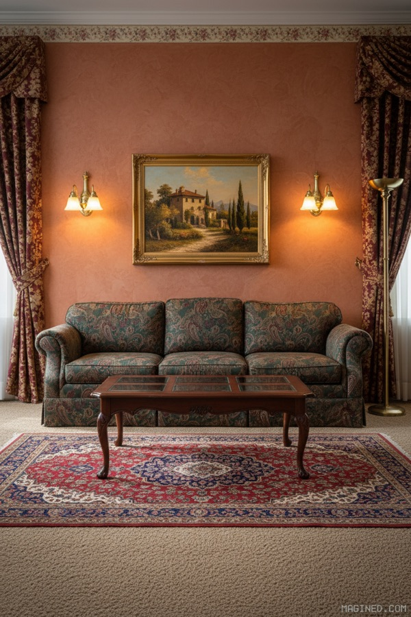
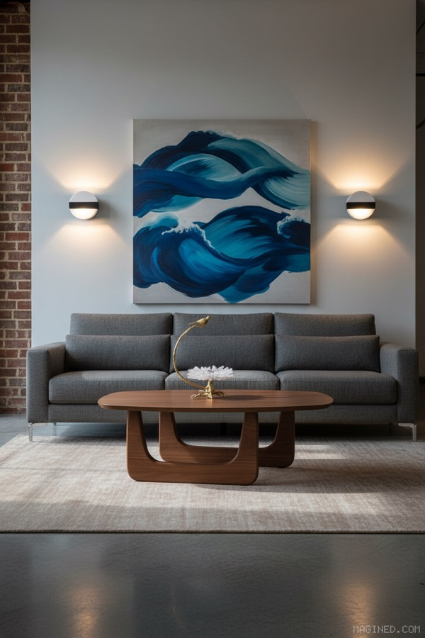
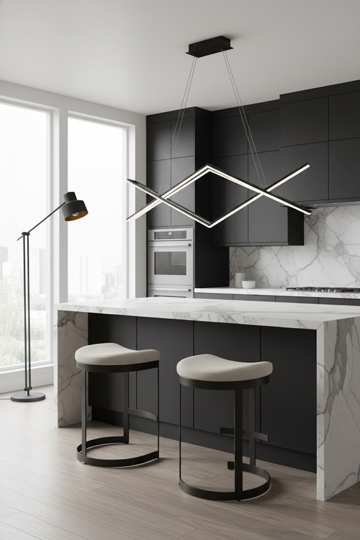
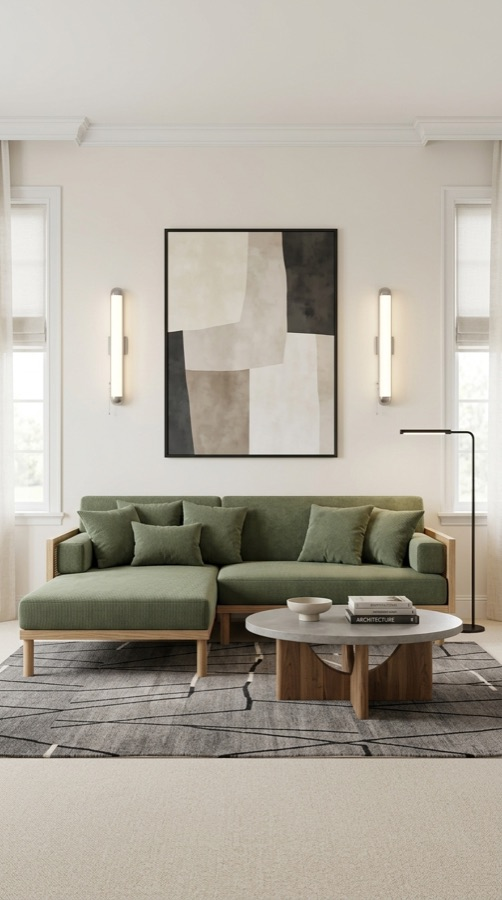
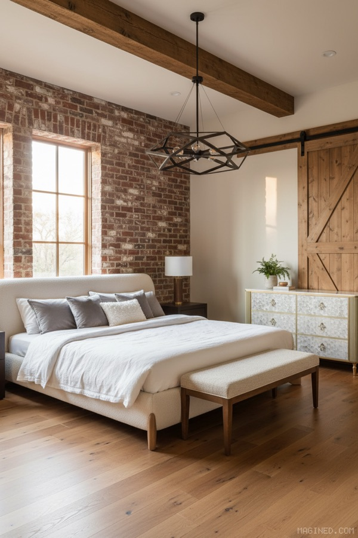

magined
Founder, designer and builder · 2026
An AI room designer and gallery with shoppable products. I'm the founder, designer and engineer, building it with Claude and an agent-first workflow.


The idea
Redecorating a room is a visual problem, but shopping for it is a text problem: endless product listings with no way to see how anything fits your space. magined closes that gap. It redesigns your room with AI, then lets you shop the products that appear in it.
It's also a test of a bigger idea: that one designer, working fluently with AI tools, can carry a product from idea to revenue.
What I built
The room designer, an image pipeline built on Nano Banana inside an interface I designed in Figma and refined in code.
A shoppable gallery, where generated rooms link to real products through affiliate partners.
An agent backbone on the Claude Agent SDK and MCP that handles content, product matching and day-to-day operations.
Search work for both search engines and AI assistants, so people can find it either way.


